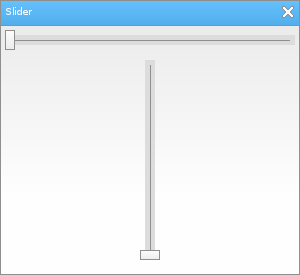

Löve Frames - The Slider Object
Return to Index
Information
The slider object has a button that can be set to slide vertically or horizontally.
The object also has a value that can be changed when it moves and a callback for when it's value changes.
Example Use
local frame = loveframes.Create("frame")
frame:SetName("Slider")
frame:SetSize(300, 275)
frame:CenterWithinArea(unpack(demo.centerarea))
local slider1 = loveframes.Create("slider", frame)
slider1:SetPos(5, 30)
slider1:SetWidth(290)
slider1:SetMinMax(0, 100)
local slider2 = loveframes.Create("slider", frame)
slider2:SetPos(5, 60)
slider2:SetHeight(200)
slider2:SetMinMax(0, 100)
slider2:SetButtonSize(20, 10)
slider2:SetSlideType("vertical")
slider2.Update = function(object, dt)
object:CenterX()
end

Event Callbacks
OnValueChanged - Called every time the object's value changes
- Arguments passed: self [object]
- Arguments passed: self [object]
- Arguments passed: self [object]
local slider = loveframes.Create("slider")
slider.OnValueChanged = function(object)
print("The slider's value changed to : " ..object:GetValue())
end
OnRelease - Called every time the slider button is released from being dragged - Arguments passed: self [object]
local slider = loveframes.Create("slider")
slider.OnRelease = function(object)
print("The slider button has been released.")
end
Methods
SetValue - Sets the value of the object
- Returns 1 value: value [number]
- Returns 1 value: max [number]
- Returns 1 value: min [number]
- Returns 2 values: minimum [number], maximum [number]
- Returns 1 value: text [string]
- Returns 2 values: width [number], height [number]
- Returns 1 value: scrollable [boolean]
- Returns 1 value: increase [number]
- Returns 1 value: increase [number]
object:SetValue(value[number])GetValue - Gets the value of the object
- Returns 1 value: value [number]
local value = object:GetValue()SetMax - Sets the object's maximum value
object:SetMax(max[number])GetMax - Gets the object's maximum value
- Returns 1 value: max [number]
local max = object:GetMax()SetMin - Sets the object's minimum value
object:SetMin(min[number])GetMin - Gets the object's minimum value
- Returns 1 value: min [number]
local min = object:GetMin()SetMinMax - Sets the object's minimum and maximum values
object:SetMinMax(min[number], max[number])GetMinMax - Gets the object's minimum and maximum values
- Returns 2 values: minimum [number], maximum [number]
local min, max = object:GetMinMax(min[number], max[number])SetText - Sets the object's text
object:SetText(text[string])GetText - Gets the object's text
- Returns 1 value: text [string]
local text = object:GetText()SetDecimals - Sets the amount of decimals the object's value should have.
object:SetDecimals(decimals[number])SetButtonSize - Sets size of the object's slider button.
- Returns 2 values: width [number], height [number]
local width, height = object:GetButtonSize()SetSlideType - Sets the slide type of the object. Acceptable arguments are "vertical" or "horizontal".
object:SetSlideType(slidetype[string])SetScrollable - Sets whether or not the object should be scrollable via the mouse wheel
object:SetScrollable(scrollable[boolean])GetScrollable - Gets whether or not the object should be scrollable via the mouse wheel
- Returns 1 value: scrollable [boolean]
local scrollable = object:GetScrollable()SetScrollIncrease - Sets the amount to increase the object's value by when scrolling with the mouse wheel
object:SetScrollIncrease(increase[number])GetScrollIncrease - Gets the amount to increase the object's value by when scrolling with the mouse wheel
- Returns 1 value: increase [number]
local increase = object:GetScrollIncrease()SetScrollDecrease - Sets the amount to decrease the object's value by when scrolling with the mouse wheel
object:SetScrollDecrease(decrease[number])GetScrollDecrease - Gets the amount to decrease the object's value by when scrolling with the mouse wheel
- Returns 1 value: increase [number]
local decrease = object:GetScrollDecrease()